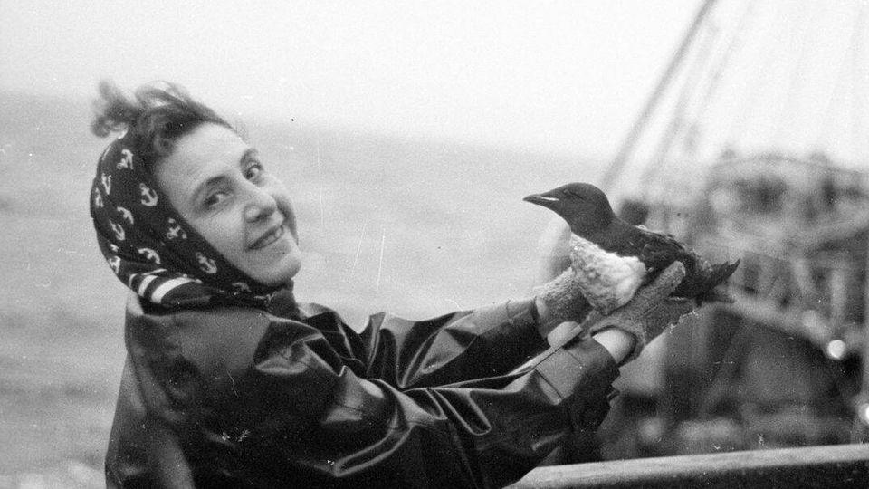
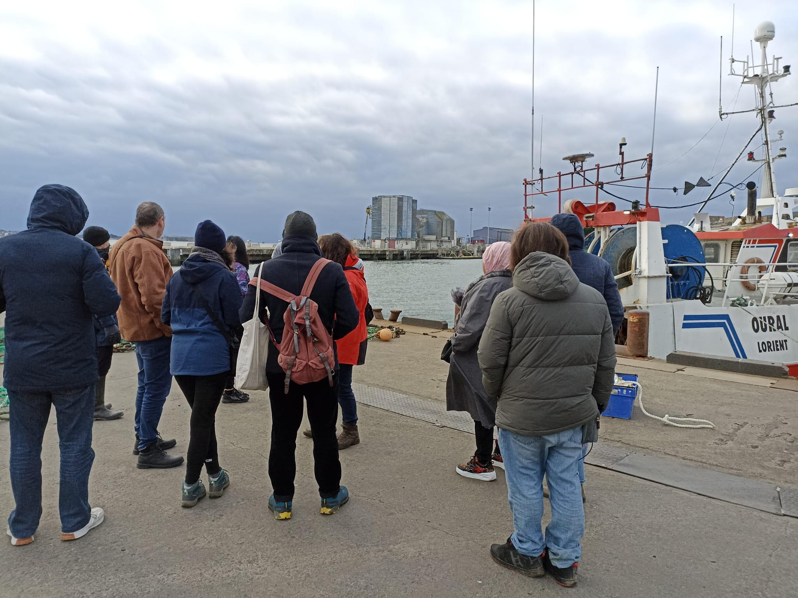
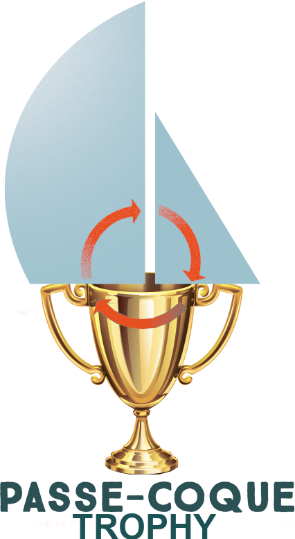
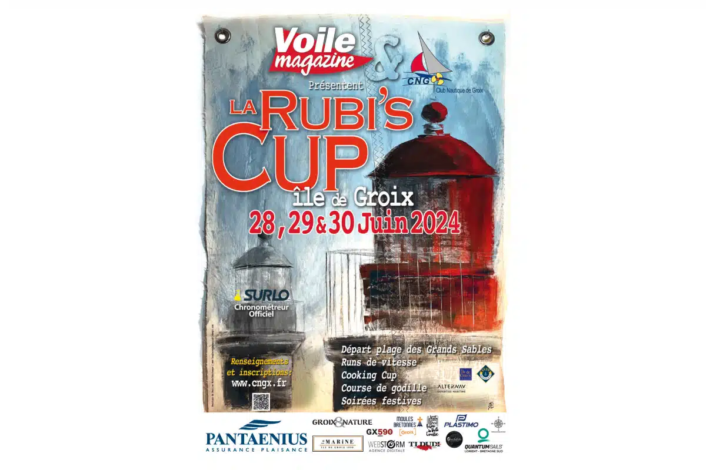
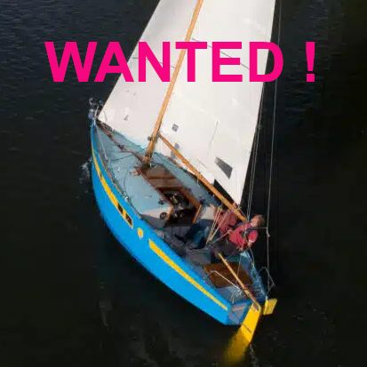

<div class="home-width">
    <!--h2>Transmettre</h2-->
    <div style="min-height: 50px;"> <!-- class="background-container-2"  -->
        <div class="container"> <!-- image on top -->
            <!--img src="/images/transmit/transmitting.png" width="100%"-->
            
            <div class="text-block" style="display: none;">
                Transmettre
            </div>
        </div>
        <!--div>
            
        </div-->
        <div style="padding: 40px 60px; background: white; margin-top: -20px; text-align: center;">
            <span style="font-weight: 900; font-size: 1.1em;">Transmettre</span>, c'est la raison d'&ecirc;tre de Passe&#8209;Coque qui accompagne depuis 2019 associations et porteurs de projets dans le 
            domaine de l'&eacute;conomie sociale et solidaire afin de cr&eacute;er un trait d'union entre des bateaux sans projets et des projets sans bateaux.<br/>

            <div style="padding-top: 10px; background: white;">
                Vous &ecirc;tes porteur de projet et recherchez une embarcation, contactez nous <a href="#" onclick="clack('_61')">ICI</a>.
                <br/>
                Pour d&eacute;couvrir les projets &agrave; saisir, cliquez <a href="#" onclick="clack('_4')">ICI</a>.
            </div>
            <hr style="margin: 10px 0 30px 0;"/>

            D&eacute;couvrez chacun des projets suivis ou initi&eacute;s par Passe-Coque depuis sa cr&eacute;ation
            (<i>les plus r&eacute;cents en premier</i>)&nbsp;:
            <hr style="margin: 10px 0 30px 0;"/>

            <div id="filter" style="text-align: left;">
                <i>Filtre (sur le nom du projet) </i>
                <input type="search" size="40" class="search-item" placeholder="Recherche par nom ou th&egrave;me..." id="search-field" title="Enter filter on name. Supports RegExp." onkeydown="projectFilterWasPressed(event);">
                <button class="search-item" id="search-button" onclick="searchProjects();" title="Search Projects...">🔎</button>
            </div>

            <!--
                Ordre (reverse):
                Objectif Grand Sud
                Pordin-Nancq
                Madhelez Atlantide
                Nav Solidaires
                African
                Voyages en Patrimoine
                Cap melvan
                Jolly Jumper
                Super arlequin
                Isseo
                Greta
                Watter
                Cap martinique
                Entendre la mer
                Low Tech
                Hublow
                Muscadet
                Godille
                La tête à Toto
                . . .
            -->
            <div id="nb-prj" style="text-align: left;"></div>
            <div id="project-container" class="project-slides">
                <!--
                    pix: 376x376
                -->
                <div id="tx-37" class="boat-image-plus-text boat-frame project-frame" onclick="clickOnTxPix(this, 'La Fabuleuse Armada');" onmouseover="mouseOnTxPix(this);" keywords="fabuleuse; armada; handicap; truc; en plus;">
                    <div class="boat-image-container project-image" style="background-color: white;">
                        
                    </div>
                    <span style="position: relative; display: block; bottom: 4px; line-height: 1.1em;">La Fabuleuse Armada</span>
                </div>

                <div id="tx-36" class="boat-image-plus-text boat-frame project-frame" onclick="clickOnTxPix(this, 'Rubi\'s Cup - 2025');" onmouseover="mouseOnTxPix(this);" keywords="rubi; cup; groix; port; tudy; 2025">
                    <div class="boat-image-container project-image" style="background-color: white;">
                        
                    </div>
                    <span style="position: relative; display: block; bottom: 4px; line-height: 1.1em;">Rubi's Cup - 2025</span>
                </div>

                <div id="tx-35" class="boat-image-plus-text boat-frame project-frame" onclick="clickOnTxPix(this, 'Dans le sillage d\'Anita Conti');" onmouseover="mouseOnTxPix(this);" keywords="anita; conti;">
                    <div class="boat-image-container project-image" style="background-color: white;">
                        
                    </div>
                    <span style="position: relative; display: block; bottom: 4px; line-height: 1.1em;">Dans le sillage d'Anita Conti<br/>Bateau : La R&ecirc;veuse</span>
                </div>

                <div id="tx-34" class="boat-image-plus-text boat-frame project-frame" onclick="clickOnTxPix(this, 'Passages');" onmouseover="mouseOnTxPix(this);" keywords="lorient; theatre; passage;">
                    <div class="boat-image-container project-image" style="background-color: white;">
                        
                    </div>
                    <span style="position: relative; display: block; bottom: 4px; line-height: 1.1em;">Projet Passages</span>
                </div>

                <div id="tx-33" class="boat-image-plus-text boat-frame project-frame" onclick="clickOnTxPix(this, 'Passe-Coque Trophy');" onmouseover="mouseOnTxPix(this);" keywords="passe; coque; troph">
                    <div class="boat-image-container project-image" style="background-color: white;">
                        <!--img src="./images/trophy.png" height="100%"-->
                        
                    </div>
                    <span style="position: relative; display: block; bottom: 4px; line-height: 1.1em;">Passe-Coque Trophy</span>
                </div>

                <div id="tx-32" class="boat-image-plus-text boat-frame project-frame" onclick="clickOnTxPix(this, 'Jericho !');" onmouseover="mouseOnTxPix(this);" keywords="jericho; sauver; carter; acier; trompette">
                    <div class="boat-image-container project-image" style="background-color: white; background-image: url(/images/boats/jericho/jericho.png); background-size: 100%; background-repeat: no-repeat;">
                        <!--img src="/images/boats/jericho/jericho.png" width="100%"-->
                        
                        <!--h2 class="not-on-small-screens" style="color: blue;">Sauver Jericho !</h2-->
                    </div>
                    <span style="position: relative; display: block; bottom: 4px; line-height: 1.1em;">Jericho !</span>
                </div>

                <div id="tx-31" class="boat-image-plus-text boat-frame project-frame" onclick="clickOnTxPix(this, 'Projet Arp&egrave;ges');" onmouseover="mouseOnTxPix(this);" keywords="arpege; arpège;">
                    <div class="boat-image-container project-image" style="background-color: white; background-image: url(/images/boats/arpege.webp); background-size: 100%; background-repeat: no-repeat;">
                        <!--img src="/images/boats/arpege.webp" width="100%"-->
                        <h2 class="not-on-small-screens" style="color: blue;">Plusieurs Arp&egrave;ges pour une navigation chorale !</h2>
                    </div>
                    <span style="position: relative; display: block; bottom: 4px; line-height: 1.1em;">Projet Arp&egrave;ges</span>
                </div>

                <div id="tx-30" class="boat-image-plus-text boat-frame project-frame" onclick="clickOnTxPix(this, 'De Cap en Cap');" onmouseover="mouseOnTxPix(this);" keywords="cap; benoiton; nomadict; gin; fizz">
                    <div class="boat-image-container project-image" style="background-color: white;">
                        
                    </div>
                    <span style="position: relative; display: block; bottom: 4px; line-height: 1.1em;">De Cap en Cap<br/>Bateau&nbsp;: Nomadict</span>
                </div>

                <div id="tx-29" class="boat-image-plus-text boat-frame project-frame" onclick="clickOnTxPix(this, 'Les Jeannettes');" onmouseover="mouseOnTxPix(this);" keywords="jeannette; solidaire; shadok">
                    <div class="boat-image-container project-image" style="background-color: white;">
                        
                    </div>
                    <span style="position: relative; display: block; bottom: 4px; line-height: 1.1em;">Les Jeannettes<br/>Voile solidaire</span>
                </div>

                <div id="tx-26" class="boat-image-plus-text boat-frame project-frame" onclick="clickOnTxPix(this, 'La t&ecirc;te &agrave; Toto');" onmouseover="mouseOnTxPix(this);" keywords="tete; toto; emission; zero; raspberry">
                    <div class="boat-image-container project-image">
                        
                    </div>
                    <span style="position: relative; display: block; bottom: 4px; line-height: 1.1em;">La T&ecirc;te &agrave; Toto<br/>Z&eacute;ro &eacute;mission.</span>
                </div>

                <div id="tx-25" class="boat-image-plus-text boat-frame project-frame" onclick="clickOnTxPix(this, 'PHILOVENT');" onmouseover="mouseOnTxPix(this);" keywords="godille; philippe; benoiton;">
                    <div class="boat-image-container project-image">
                        <!--img src="/gag/gag.png" width="100%" style="margin-top:0;"-->
                        
                        <!--div style="color: orangered; font-size: 2.5em; position: absolute; top: 40%; left: 50%; transform: translate(-50%, -50%);">Projets Low-Tech</div-->
                    </div>
                    <span style="position: relative; display: block; bottom: 4px; line-height: 1.1em;">PHILOVENT<br/>Apprenez &agrave; godiller.</span>
                </div>

                <!--div id="tx-21" class="boat-image-plus-text boat-frame project-frame" onclick="clickOnTxPix(this);" onmouseover="mouseOnTxPix(this);" keywords="">
                    <div class="boat-image-container project-image">
                        
                        <--div style="color: orangered; font-size: 2.5em; position: absolute; top: 40%; left: 50%; transform: translate(-50%, -50%);">Projets Low-Tech</div ->
                    </div>
                    <span style="position: relative; display: block; bottom: 4px; line-height: 1.1em;">WANTED&nbsp;! Un Muscadet pour le National 2024&nbsp;!</span>
                </div-->

                <div id="tx-20" class="boat-image-plus-text boat-frame project-frame" onclick="clickOnTxPix(this, 'Projets Low-Tech');" onmouseover="mouseOnTxPix(this);" keywords="low; tech; no-tech; no tech; raspberry;">
                    <div class="boat-image-container project-image">
                        
                        <!--div style="color: orangered; font-size: 2.5em; position: absolute; top: 40%; left: 50%; transform: translate(-50%, -50%);">Projets Low-Tech</div-->
                    </div>
                    <span style="position: relative; display: block; bottom: 4px; line-height: 1.1em;">Projets Low-Tech</span>
                </div>

                <div id="tx-09" class="boat-image-plus-text boat-frame project-frame" onclick="clickOnTxPix(this, 'Entendre la mer');" onmouseover="mouseOnTxPix(this);" keywords="sourd; malentendant; handicap; melkart; entendre">
                    <div class="boat-image-container project-image">
                        
                    </div>
                    <span style="position: relative; display: block; bottom: 4px; line-height: 1.1em;">Projet "Entendre la mer"<br/>Bateau&nbsp;: Melkart, Evasion 32</span>
                </div>

                <div id="tx-18" class="boat-image-plus-text boat-frame project-frame" onclick="clickOnTxPix(this);" onmouseover="mouseOnTxPix(this);" keywords="greta; ecole; lycee">
                    <div class="boat-image-container project-image">
                        
                    </div>
                    <span style="position: relative; display: block; bottom: 4px; line-height: 1.1em;">Relations avec<br/>les lyc&eacute;es et GRETA</span>
                </div>

                <div id="tx-24" class="boat-image-plus-text boat-frame project-frame" onclick="clickOnTxPix(this);" onmouseover="mouseOnTxPix(this);" keywords="voile; mag; arlequin; saudade; fx; crecy;">
                    <div class="boat-image-container project-image">
                        
                        <!--div style="color: orangered; font-size: 2.5em; position: absolute; top: 40%; left: 50%; transform: translate(-50%, -50%);">Projets Low-Tech</div-->
                    </div>
                    <span style="position: relative; display: block; bottom: 4px; line-height: 1.1em;">Super-Arlequin<br/>Voile Magazine</span>
                </div>

                <div id="tx-22" class="boat-image-plus-text boat-frame project-frame" onclick="clickOnTxPix(this);" onmouseover="mouseOnTxPix(this);" keywords="jolly; jumper; first; handicap; solidaire">
                    <div class="boat-image-container project-image">
                        
                        <!--div style="color: orangered; font-size: 2.5em; position: absolute; top: 40%; left: 50%; transform: translate(-50%, -50%);">Projets Low-Tech</div-->
                    </div>
                    <span style="position: relative; display: block; bottom: 4px; line-height: 1.1em;">First 325<br/>Jolly Jumper</span>
                </div>

                <div id="tx-03" class="boat-image-plus-text boat-frame project-frame" onclick="clickOnTxPix(this);" onmouseover="mouseOnTxPix(this);" keywords="cap; melvan; karate">
                    <div class="boat-image-container project-image">
                        
                    </div>
                    <span style="position: relative; display: block; bottom: 4px; line-height: 1.1em;">Cap Melvan<br/>Bateau&nbsp;: Karate 33</span>
                </div>

                <div id="tx-02" class="boat-image-plus-text boat-frame project-frame" onclick="clickOnTxPix(this);" onmouseover="mouseOnTxPix(this);" keywords="passpartout; voyage; patrimoine">
                    <div class="boat-image-container project-image">
                        
                    </div>
                    <span style="position: relative; display: block; bottom: 4px; line-height: 1.1em;">Voyages en Patrimoine<br/>Bateau&nbsp;: Passpartout</span>
                </div>

                <div id="tx-08" class="boat-image-plus-text boat-frame project-frame" onclick="clickOnTxPix(this);" onmouseover="mouseOnTxPix(this);" keywords="felicie; afri; can">
                    <div class="boat-image-container project-image">
                        
                    </div>
                    <span style="position: relative; display: block; bottom: 4px; line-height: 1.1em;">Afri'can<br/>Bateau&nbsp;: F&eacute;licie</span>
                </div>

                <div id="tx-01" class="boat-image-plus-text boat-frame project-frame"onclick="clickOnTxPix(this);" onmouseover="mouseOnTxPix(this);" keywords="nav; solidaire; prothese;">
                    <div class="boat-image-container project-image">
                        
                    </div>
                    <span style="position: relative; display: block; bottom: 4px; line-height: 1.1em;">Nav'Solidaire<br/>Bateau&nbsp;:&nbsp;<!--F&eacute;licie-->La R&ecirc;veuse</span>
                </div>

                <div id="tx-06" class="boat-image-plus-text boat-frame project-frame" onclick="clickOnTxPix(this);" onmouseover="mouseOnTxPix(this);" keywords="atlantide; pompier">
                    <div class="boat-image-container project-image">
                        
                    </div>
                    <span style="position: relative; display: block; bottom: 4px; line-height: 1.1em;">Association des Pompiers<br/>Bateau&nbsp;: Atlantide</span>
                </div>

                <div id="tx-05" class="boat-image-plus-text boat-frame project-frame" onclick="clickOnTxPix(this);" onmouseover="mouseOnTxPix(this);" keywords="pordin; nancq; carter; 37">
                    <div class="boat-image-container project-image">
                        
                    </div>
                    <span style="position: relative; display: block; bottom: 4px; line-height: 1.1em;">Pordin-Nancq<br/>Bateau&nbsp;: Carter 37</span>
                </div>

                <div id="tx-07" class="boat-image-plus-text boat-frame project-frame" onclick="clickOnTxPix(this);" onmouseover="mouseOnTxPix(this);" keywords="grand; sud; horn; bene">
                    <div class="boat-image-container project-image">
                        
                    </div>
                    <span style="position: relative; display: block; bottom: 4px; line-height: 1.1em;">Objectif Grand Sud<br/>Bateau&nbsp;: La&nbsp;Cardinale</span>
                </div>

            </div>

            <hr style="margin: 10px 0 30px 0;"/>
            <h2>Les projets arriv&eacute;s &agrave; terme</h2>

            <div id="nb-prj-exp" style="text-align: left;"></div>
            <div id="project-container-expired" class="project-slides">
                <!--
                    pix: 376x376
                -->

                <div id="tx-23" class="boat-image-plus-text boat-frame project-frame" onclick="clickOnTxPix(this, 'Projet HubLow');" onmouseover="mouseOnTxPix(this);" keywords="hublow; tiny; house">
                    <div class="boat-image-container project-image">
                        
                        <!--div style="color: orangered; font-size: 2.5em; position: absolute; top: 40%; left: 50%; transform: translate(-50%, -50%);">Projets Low-Tech</div-->
                    </div>
                    <span style="position: relative; display: block; bottom: 4px; line-height: 1.1em;">Hublow - Habitat L&eacute;ger Insolite</span>
                </div>

                <div id="tx-04" class="boat-image-plus-text boat-frame project-frame" onclick="clickOnTxPix(this, 'Projet WATTer');" onmouseover="mouseOnTxPix(this);" keywords="watter; eolienne;">
                    <div class="boat-image-container project-image">
                        
                    </div>
                    <span style="position: relative; display: block; bottom: 4px; line-height: 1.1em;">WATTer<br/>Bateau&nbsp;: La R&ecirc;veuse</span>
                </div>

                <div id="tx-27" class="boat-image-plus-text boat-frame project-frame" onclick="clickOnTxPix(this, 'F&ecirc;tes Maritimes de Brest - 2024');" onmouseover="mouseOnTxPix(this);" keywords="brest; maritime; 2024">
                    <div class="boat-image-container project-image" style="background-color: white;">
                        
                    </div>
                    <span style="position: relative; display: block; bottom: 4px; line-height: 1.1em;">F&ecirc;tes Maritimes de Brest - 2024</span>
                </div>

                <div id="tx-28" class="boat-image-plus-text boat-frame project-frame" onclick="clickOnTxPix(this, 'Rubi\'s Cup - 2024');" onmouseover="mouseOnTxPix(this);" keywords="rubi; cup; groix; port; tudy; 2024">
                    <div class="boat-image-container project-image" style="background-color: white;">
                        
                    </div>
                    <span style="position: relative; display: block; bottom: 4px; line-height: 1.1em;">Rubi's Cup - 2024</span>
                </div>

                <div id="tx-17" class="boat-image-plus-text boat-frame project-frame" onclick="clickOnTxPix(this);" onmouseover="mouseOnTxPix(this);" keywords="cap; martinique; benoiton; philippe">
                    <div class="boat-image-container project-image">
                        
                    </div>
                    <span style="position: relative; display: block; bottom: 4px; line-height: 1.1em;">Cap Martinique 2024<br/>avec Philippe Benoiton</span>
                </div>

                <div id="tx-21" class="boat-image-plus-text boat-frame project-frame" onclick="clickOnTxPix(this, 'National Muscadet - 2024');" onmouseover="mouseOnTxPix(this);" keywords="national; muscadet; 2024">
                    <div class="boat-image-container project-image" style="background-color: white;">
                        
                    </div>
                    <span style="position: relative; display: block; bottom: 4px; line-height: 1.1em;">National Muscadet - 2024</span>
                </div>

                <div id="tx-16" class="boat-image-plus-text boat-frame project-frame" onclick="clickOnTxPix(this);" onmouseover="mouseOnTxPix(this);" keywords="isse; selection; handicap; imagine">
                    <div class="boat-image-container project-image">
                        
                    </div>
                    <span style="position: relative; display: block; bottom: 4px; line-height: 1.1em;">Isse'O<br/>Bateau&nbsp;: Imagine, Selection&nbsp;37</span>
                </div>

            </div>
        </div>

        <div id="info-tx" style="display: none;">
            <!-- See DIALOG_OPTION = false -->
        </div>
        <!-- Renover, Partager -->
        <div style="width: 100%; background-color: #d9e4ea; padding: 10px;">
            <div class="page-bottom-02">

                <div style="border: 1px solid silver; border-radius: 3px; padding: 5px; margin: 10px;">
                    <h3>R&eacute;nover</h3>
                    
                    <p style="text-align: left;">
                        <button class="pc-button" onclick="clack('_32');">Visitez notre chantier</button>
                    </p>
                </div>
                <div style="border: 1px solid silver; border-radius: 3px; padding: 5px; margin: 10px;">
                    <h3>Partager</h3>
                    
                    <p style="text-align: left;">
                        <button class="pc-button" onclick="clack('_33');">Rejoignez le club</button>
                    </p>
                </div>
                <!--div style="border: 1px solid rgb(168, 161, 161); border-radius: 3px; padding: 5px; margin: 0 5px;">
                    <div style="text-align: center;"></div>
                    <h3>Recherche nouveaux investisseurs solidaires</h3>
                    Vous souhaitez participer&nbsp;?<br/>
                    Soutenir le d&eacute;veloppement de l'Eco-Village&nbsp;?
                </div-->
            </div>
        </div>
        <div style="min-height: 40px;"></div>

        <!--div style="border: 2px solid silver; padding: 20px; display: grid; grid-template-columns: 50% 50%;">
            <div style="border: 2px solid navy; margin: 30px; padding: 30px; text-align: left;">
                R&Eacute;NOVER &amp; SUR-CYCLER
                <p>
                    Passe&#8209;Coque, c'est aussi un chantier o&ugrave; toutes les comp&eacute;tences techniques et nautiques s'expriment 
                    pour donner une seconde vie aux voiliers.
                </p> 
                <p>
                    Passe&#8209;Coque intervient sur des projets de "refit" et de transformation de bateaux en habitat l&eacute;ger 
                    dans une d&eacute;marche de sur-cyclage.
                </p>
                <p>
                    <a href="#" onclick="clack('_32');">D&Eacute;COUVREZ NOTRE CHANTIER</a>.
                </p>
            </div>
            <div style="border: 2px solid navy; margin: 30px; padding: 30px; text-align: left;">
                PARTAGER
            </div>
        </div-->
        <!-- Pour continuer... -->
        <!--div style="margin-top: 20px; border: 2px solid silver; padding: 20px; display: grid; grid-template-columns: 50% 50%;">
            <div style="margin: 30px; padding: 30px; text-align: left; background: rgba(255, 255, 255, 0.65);">
                <p>Vous avez un projet et vous cherchez un bateau ?...</p>
                <p>D&eacute;couvrez nos bateaux &agrave; saisir <a href="#" onclick="clack('_4');">ICI</a></p>
                <p>Ou contactez-nous <a href="#" onclick="clack('_61');">ICI</a>.</p>
            </div>
        </div-->

    </div>    
</div>
